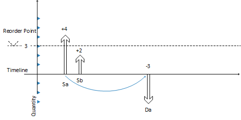
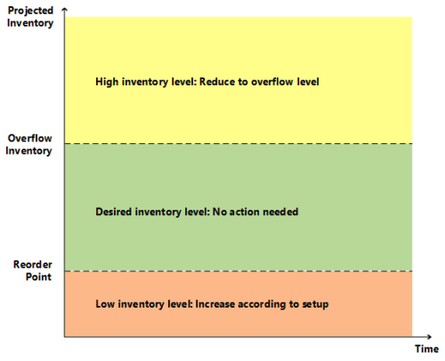
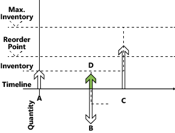

Designdetails: Umgang mit Wiederbeschaffungsverfahren
Um einen Artikel in die Beschaffungsplanung aufzunehmen, müssen Sie auf der Seite Artikelkarte eine Nachbestellungsrichtlinie dafür festlegen. Die folgenden Wiederbeschaffungsrichtlinien sind verfügbar:
- Feste Bestellmenge
- Auffüllen auf Maximalbestand
- Bestellung
- Los-für-Los
Die Richtlinien Feste Bestellmenge und Höchstmenge beziehen sich auf die Bestandsplanung. Diese Richtlinien koexistieren mit dem schrittweisen Ausgleich des Angebots und der Auftragsverfolgung.
Die Rolle des Meldebestands
Ein Minimalbestand repräsentiert den Bedarf während der Beschaffungszeit. Wenn der Lagerstatus voraussichtlich unter den Lagerbestand gerät, der durch den Minimalbestand definiert ist, muss mehr bestellt werden. Der Bestand wird schrittweise verringert, bis der Nachschub eintrifft. Er kann Null oder den Sicherheitsbestand erreichen. Das Planungssystem schlägt einen vorwärtsgeplanten Beschaffungsauftrag an dem Zeitpunkt vor, an dem der Bestand unter den Minimalbestand sinkt.
Lagerebenen können sich während des Zeitfensters erheblich verändern. Daher überwacht das Planungssystem ständig verfügbare Bestände.
Überwachen der voraussichtlichen Lagerebene und des Meldebestands
Der Bestand ist eine Art Vorrat, jedoch für Bestandsplanung unterscheidet das Planungssystem zwischen zwei Bestandsebenen:
- Voraussichtlicher Lagerbestand
- Voraussichtlich verfügbarer Lagerbestand
Voraussichtlicher Lagerbestand
Zu Beginn des Planungsprozesses ist der voraussichtliche Bestand die Bruttobestandsmenge. Die Bruttomenge umfasst gebuchtes und nicht gebuchtes Angebot und Nachfrage in der Vergangenheit. Diese Menge wird zu einer voraussichtlichen Lagerebene, die Bruttomengen aus zukünftigem Angebot und Nachfrage beibehalten. Zukünftiges Angebot und zukünftige Nachfrage werden entlang der Zeitlinie eingeführt, entweder reserviert oder auf andere Weise zugewiesen.
Das Planungssystem verwendet voraussichtlichen Bestand, um den Minimalbestand zu überwachen und um die Wiederbeschaffungsmenge zu bestimmen, wenn die Wiederbeschaffungsrichtlinie Höchstmenge verwendet wird.
Voraussichtlich verfügbarer Lagerbestand
Der voraussichtlich verfügbare Lagerbestand ist Teil ist der voraussichtliche Bestand, der zum Erfüllen der Nachfrage zu einem bestimmten Zeitpunkt verfügbar ist. Das Planungssystem verwendet den voraussichtlich verfügbaren Lagerbestand, wenn die Sicherheitsbestandsebene überwacht wird. Für unerwarteten Bedarf muss immer ein Sicherheitsbestand verfügbar sein.
Zeitrahmen
Der voraussichtliche Lagerbestands ist entscheidend, um zu ermitteln, wann der Minimalbestand erreicht ist oder unterschritten wurde, und wie die richtige Auftragsmenge berechnet wird, wenn das Wiederbeschaffungsverfahren Höchstmenge verwendet wird.
Der voraussichtliche Lagerbestand wird am Anfang der Planungsperiode berechnet. Dies ist eine grobe Ebene, bei der Reservierungen und andere Zuordnungen nicht berücksichtigt werden. Um dieses Lagerbestandsniveau während der Planungssequenz zu überwachen, überwacht das Planungssystem die aggregierten Änderungen über eine Zeitperiode hinweg. Dieser Zeitraum wird als Zeitrahmen bezeichnet. Weitere Informationen zu Zeitrahmen finden Sie unter Die Rolle des Zeitrahmens. Das Planungssystem stellt sicher, dass der Zeitrahmen mindestens einen Tag beträgt. Ein Tag ist die Mindestzeiteinheit für Nachfrage- oder Angebotsereignisse.
Bestimmen des voraussichtlichen Lagerbestands
Die folgende Sequenz beschreibt, wie das Planungssystem den voraussichtlichen Lagerbestand bestimmt:
- Wenn ein Vorratsereignis, wie eine Bestellung, vollständig geplant wird, erhöht es den voraussichtlichen Lagerbestand am Fälligkeitsdatum des Ereignisses.
- Wenn ein Nachfrageereignis vollständig erfüllt wurde, verringert es nicht sofort den voraussichtlichen Lagerbestand. Stattdessen bucht es eine Minderungserinnerung, die ein interner Datensatz ist, der das Datum und die Menge der Ergänzung zum voraussichtlichen Lagerbestand beinhaltet.
- Wenn ein späteres Lieferereignis geplant und der Zeitleiste hinzugefügt wird, untersucht das System nacheinander gebuchte Abnahmeerinnerungen bis zum geplanten Lieferdatum. Während dieses Prozesses kann der Minimalbestand der internen Zunahmeerinnerung erreicht oder unterschritten werden.
- Wenn ein neuer Beschaffungsauftrag eingegeben wird, prüft es, ob dieser vor dem aktuellen Vorrat eingegeben wurde. Wenn dies der Fall ist, wird der neue Vorrat zum aktuellen Vorrat, und der Ausgleichsvorgang beginnt erneut.
Das folgende Bild zeigt dieses Prinzip.

- Vorrat Sa von 4 (fest) schließt Bedarf Da von -3.
- CloseDemand: Erstellen Sie eine Minderungserinnerung von -3 (nicht angezeigt).
Vorrat Sa wird mit einem Überschuss von 1 geschlossen (kein Bedarf mehr vorhanden).
Der voraussichtliche Lagerbestand steigt auf +4, während der voraussichtliche verfügbare Lagferbestand -1 wird.
Der nächste Vorrat Sb von 2 (ein anderer Auftrag) wurde bereits in die Zeitachse platziert.
- Das Planungssystem prüft auf eine Minderungserinnerung vor Sb (in diesem Beispiel ist dies nicht der Fall, daher wird keine Aktion ergriffen).
Das Planungssystem schließt Vorrat Sb (kein Bedarf mehr vorhanden), entweder A: durch Reduzierung auf 0 (Stornieren) oder B: durch unverändert lassen.
Der voraussichtliche Lagerbestand steigt (A: +0 => +4 oder B: +2 = +6).
Das Planungssystem führt eine letzte Prüfung durch. Gibt es eine Abnahmeerinnerung? Ja, es gibt eine am Datum Da
- Das Planungssystem fügt die Minderungserinnerung -3 in der Ebene des voraussichtlichen Lagerbestands hinzu, entweder A: +4 -3 = 1 oder B: +6 -3 = +3.
- Bei A erstellt das Planungssystem eine vorausplanende Bestellung ab Datum Da. Bei B wird der Minimalbestand erreicht, und es wird ein neuer Auftrag erstellt.
Die Rolle des Zeitrahmens
Der Zweck dieses Zeitrahmens ist es, Bedarfsereignisse innerhalb der Periode zu erfassen, um einen gemeinsamen Beschaffungsauftrag zu erstellen.
Für Wiederbeschaffungsverfahren, die einen Minimalbestand verwenden, können Sie einen Zeitrahmen definieren. Zeitrahmen helfen sicherzustellen, dass Bedarfe innerhalb des gleichen Zeitraums kumuliert werden. Das System prüft dann die Auswirkung auf den projizierten Bestand und ob der Meldebestand überschritten wurde.
Wenn Sie den Meldebestand überschreiten, Plant das System einen neuen Beschaffungsauftrag vom Ende der durch den Zeitrahmen definierten Periode vorwärts. Zeitrahmen beginnen am geplanten Startdatum.
Das Zeitrahmenkonzept spiegelt den manuellen Vorgang des Überprüfens des Lagerbestands auf häufiger Basis anstatt für jede Transaktion. Sie müssen die Häufigkeit (den Zeitrahmen) festlegen. Beispielsweise erfassen Sie möglicherweise alle Artikelanforderungen von einem Kreditor, um einen wöchentlichen Auftrag zu platzieren.
Zeitrahmen werden häufig verwendet, um einen Kaskadeneffekt zu vermeiden. Zum Beispiel eine eine ausgeglichene Zeile von Bedarf und Vorrat, bei der ein frühzeitiger Bedarf storniert oder ein neuer Bedarf erstellt wird. Das Ergebnis würde sein, dass jeder Beschaffungsauftrag (mit Ausnahme des letzten) umgeplant würde.
Unter dem Überlauflevel bleiben
Wenn das Wiederbeschaffungsverfahren Maximalbestand und Feste Bestellmenge verwendet werden, konzentriert sich das Planungssystem nur auf den voraussichtlichen Lagerbestand in dem vorgegebenen Zeitrahmen. Es könnte auf ein zusätzliches Angebot hindeuten, wenn negative Nachfrage- oder positive Angebotsänderungen außerhalb des Zeitfensters auftreten. Bei einem zusätzlichen Vorrat berechnet das Planungssystem die Menge, um die Sie den Vorrat verringern sollten. Diese Menge wird als „Überlauflevel“ bezeichnet. Der Überlauf ist als Planungszeile mit einer Menge ändern oder Abbrechen Operation und der folgenden Warnmeldung verfügbar:
- Achtung: Der voraussichtliche Lagerbestand [xx] ist höher als das Überlauflevel [xx] am Fälligkeitsdatum [xx].*

Berechnung des Überlauflevels
Das Überlauflevel wird auf verschiedene Arten abhängig vom Wiederbeschaffungsverfahren berechnet.
Auffüllen auf Maximalbestand
Überlauflevel = Maximalbestand
Hinweis
Wenn Sie eine Mindestbestellmenge verwenden, wird diese wie folgt hinzugefügt:
Überlaufmenge = maximaler Lagerbestand + Mindestbestellmenge.
Feste Bestellmenge
Überlauflevel = Nachbestellmenge + Meldebestand
Hinweis
Wenn die Mindestbestellmenge höher als der Meldebestand ist, wird sie wie folgt ersetzt:
Überlauflevel = Nachbestellmenge + Mindestbestellmenge
Losgrößenrundungsfaktor
Wenn ein Auftragsvielfaches vorhanden ist, reguliert dieses den Überlauflevel für die Wiederbeschaffungsverfahren die Höchstmenge und die Feste Nachbestellmenge.
Erstellen der Planungszeile mit Überlaufwarnmeldung
Eine Planungszeile wird erstellt, wenn eine vorhandene Lieferung dazu führt, dass der voraussichtliche Lagerbestand höher ist, als das Überlauflevel am Ende eines Zeitrahmens. Um vor einem Extravorrat zu warnen, hat die Planungszeile eine Warnmeldung, das Feld Ereignismeldung akzeptieren ist nicht aktiviert, und die Ereignismeldung ist entweder Abbrechen oder Menge ändern
Berechnen der Planungszeilenmenge
Die Menge auf einer Planungszeile wird wie folgt berechnet:
Planungszeilen-Menge = Netzstrom-Menge - (voraussichtlicher Lagerbestand - Überlauflevel)
Hinweis
Wie bei allen Hinweiszeilen werden die maximale und Mindestauftragsmengen und das Auftragsvielfache ignoriert.
Definieren des Aktionsmeldungstyps
- Wenn die Planungszeilenmenge höher als 0 ist, ist die Aktionsmeldung Menge ändern.
- Wenn die Planungszeilenmenge gleich oder weniger als 0 ist, ist die Aktionsmeldung Stornieren.
Verfassen der Warnmeldung
Bei einem Überlauf zeigt die Seite Planungselement ohne Nachverfolgung eine Warnmeldung mit den folgenden Informationen an:
- Der voraussichtliche Lagerbestand, der die Warnung ausgelöst hat.
- Der berechnete Überlauflevel
- Das Fälligkeitsdatum des Vorratsereignisses
Beispiel: „Der voraussichtliche Lagerbestand 120 übersteigt das Überlauflevel 60 am 28.01.23“
Beispielszenario
In diesem Szenario ändert ein Debitor einen Verkaufsauftrag von 70 zu 40 Stück zwischen zwei Planungen. Die Überlauffunktion reduziert den Einkauf, der für die anfängliche Verkaufsmenge vorgeschlagen worden war.
Artikeleinrichtung
| Wiederbeschaffungsverfahren | Auffüllen auf Maximalbestand |
|---|---|
| Maximale Losgröße | 100 |
| Meldebestand | 50 |
| Bestand | 80 |
Situation vor einem Vertriebsabgang
| Veranstaltung | Menge ändern | Voraussichtlicher Lagerbestand |
|---|---|---|
| Tag eins | Keine | 80 |
| Verkauf | -70 | 10 |
| Ende des Zeitrahmens | Keine | 10 |
| Neue Bestellung vorschlagen | +90 | 100 |
Situation nach Vertriebsabgang
| Ändern | "Menge ändern" | Voraussichtlicher Lagerbestand |
|---|---|---|
| Tag eins | Keine | 80 |
| Verkauf | -40 | 40 |
| Einkauf | +90 | 130 |
| Ende des Zeitrahmens | Keine | 130 |
| Vorschlagen, den Einkauf zu vermindern Auftrag von 90 bis 60 |
-30 | 100 |
Planungszeilen erstellen
Das System erstellt eine Warnungsplanungszeile, um den Einkauf um 30 von 90 auf 60 zu verringern, um den voraussichtlichen Lagerstatus auf 100 entsprechend dem Überlauflevel festzuhalten.

Hinweis
Ohne die Überlauffunktion werden keine Warnmeldungen erstellt, wenn die voraussichtliche Lagerebene über dem Maximum liegt, was einen Extravorrat von 30 verursachen könnte.
Bestandvoraussichtlich negativ behandeln
Der Minimalbestand drückt den voraussichtlichen Bedarf während der Beschaffungszeit des Artikels aus. Der voraussichtliche Lagerbestand muss groß genug sein, um den Bedarf zu decken, bis der neue Auftrag eingegangen ist. Unterdessen gleicht der Sicherheitsbestand Schwankungen im Bedarf bis zu einem anvisierten Servicelevel aus.
Das Planungssystem betrachtet es als Notfall, wenn ein zukünftiger Bedarf nicht aus dem prognostizierten Bestand gedeckt werden kann. Oder, anders ausgedrückt, dass der prognostizierte Lagerbestand negativ wird. Das System schlägt Ihnen vor, einen neuen Beschaffungsauftrag anzulegen, um den ungedeckten Teil des Bedarfs zu decken. Die Größe des neuen Beschaffungsauftrags berücksichtigt weder den maximalen Bestand oder die Nachbestellmenge noch die folgenden Auftragsmodifikatoren:
- Maximale Losgröße
- Minimale Losgröße
- Losgrößenrundungsfaktor
Stattdessen spiegelt sie den genauen Mangel wider.
In der Planungszeile für diesen Typ von Beschaffungsauftrag wird ein Notfall-Warnsymbol angezeigt, das zusätzliche Informationen zur Situation bereitstellt.
In der folgenden Abbildung zeigt Vorrat D eine Notfallbestellung an, um negativen Bestand auszugleichen.

- Vorrat A anfänglicher voraussichtlicher Lagerbestand, liegt unter dem Meldebestand.
Ein neuer voraus geplanter Vorrat wurde erstellt (C).
(Menge = Maximalbestand - Voraussichtlicher Lagerbestand)
Vorrat A wird durch Bedarf B geschlossen, der nicht vollständig abgedeckt wird.
(Bedarf B könnte versuchen, Zubehör C einzuplanen, doch der zeitrahmen verhindert dies.)
- Neuer Vorrat (D) wird erstellt, um die Restmenge auf Anfordung B zu decken.
- Bedarf B ist geschlossen (eine Erinnerung für den voraussichtlichen Lagerbestand wird erstellt).
- Das neue Vorrat D wird geschlossen.
- Voraussichtlicher Lagerbestand wird überprüft. Der Meldebestand wurde nicht überschritten.
- Vorrat C ist geschlossen (es gibt keinen weiteren Bedarf).
- Letzte Prüfung. Es gibt keine ausstehenden Erinnerungen auf Lagerebene.
Im nächsten Abschnitt werden die Eigenschaften der vier unterstützten Wiederbeschaffungsrichtlinien beschrieben.
Wiederbeschaffungsverfahren
Wiederbeschaffungsrichtlinien definieren, wie viel zu bestellen ist, wenn der Artikel aufgefüllt werden muss. Es gibt verschiedene Wiederbeschaffungsverfahren.
Feste Wiederbeschaffungsmenge
Die feste Richtlinie für die Wiederbeschaffungsmenge wird normalerweise für die Bestandsplanung für Artikel mit den folgenden Merkmalen verwendet:
- Geringe Bestandskosten
- Geringes Veralterungsrisiko
- Geringe Artikelanzahl
Verwenden Sie diese Methode normalerweise in Verbindung mit einem Minimalbestand, der den voraussichtlichen Bedarf während der Beschaffungszeit des Artikels angezeigt.
Berechnet pro Zeitrahmen
Wenn Sie den Meldebestand in einem Zeitrahmen (Meldezyklus) erreichen oder überschreiten, schlägt das System zwei Aktionen vor:
- Einen neuen Beschaffungsauftrag für die relevante Menge erstellen
- Die Bestellung ab dem ersten Datum nach dem Ende des Zeitfensters vorwärts planen
Der Minimalbestand im Zeitrahmen reduziert die Anzahl der Beschaffungsvorschläge. Er spiegelt einen Prozess wider, bei dem der tatsächliche Inhalt der Plätze in Ihrem Lager manuell überprüft wird.
Erstellt nur erforderlichen Vorrat
Bevor es einen neuen Beschaffungsauftrag vorschlägt, um einen Meldebestand zu erfüllen, prüft das Planungssystem auf den folgenden Vorrat:
- Ob Vorrat bereits bestellt ist
- Ob Sie erwarten, den Vorrat innerhalb der Lieferzeit des Artikels zu erhalten
Das System schlägt keine neuen Beschaffungsauftrag vor, wenn ein Vorrat den voraussichtlichen Lagerbestand innerhalb der Beschaffungszeit auf den Minimalbestand bringt.
Beschaffungsaufträge, die speziell erstellt werden, um einen Minimalbestand zu erfüllen, werden aus dem Vorratsausgleich ausgeschlossen und nicht geändert. Wenn Sie einen Artikel mit einem Meldebestand auslaufen lassen möchten, überprüfen Sie Ihre ausstehenden Lieferbestellungen manuell oder ändern Sie die Wiederbeschaffungsverfahren in Charge für Charge. Das System reduziert oder storniert den zusätzlichen Vorrat.
Wird mit anderen Auftragsmodifizierern kombiniert
Die Auftragsmodifikatoren „Minimale Auftragsmenge“, „Maximale Auftragsmenge“ und „Auftragsvielfaches“ sollten keine bedeutende Rolle spielen, wenn Sie die feste Nachbestellungsmengenrichtlinie verwenden. Das Planungssystem berücksichtigt sie jedoch:
- Reduzieren Sie die Menge auf die angegebene maximale Bestellmenge (und erstellen Sie zwei oder mehr Lieferungen, um die Gesamtbestellmenge zu erreichen).
- Erhöhen Sie die Bestellung auf die angegebene Mindestbestellmenge
- Runden Sie die Bestellmenge auf ein bestimmtes Bestellvielfaches auf
Zusammenfassen mit Kalendern
Bevor ein neuer Beschaffungsauftrag vorgeschlagen wird, um einen Meldebestand zu erfüllen, prüft das Planungssystem, ob der Auftrag für einen arbeitsfreien Tag geplant ist. Es verwendet die Kalender, die Sie im Feld Basiskalendercode in den Seiten Unternehmensinformationen und Standortkarte angegeben haben.
Wenn das geplante Datum ein freier Tag ist, verschiebt das Planungssystem die Reihenfolge weiter zum nächsten Arbeitstag. Eine Verschiebung des Datums kann zu einem Verkaufsauftrag, der für einen Minimalbestand gilt, aber keinen bestimmten Bedarf abdeckt. Bei solcher Nachfrage ohne Bedarf erstellt das Planungssystem ein zusätzlicher Vorrat.
Sollte nicht mit Planung verwendet werden
Da der erwartete Bedarf bereits in der Minimalbestandsebene angegeben wird, ist es nicht notwendig, eine Prognose in die Planung zu berücksichtigen. Wenn es wichtig ist, den Plan auf einer Planung zu basieren, verwenden Sie die Charge-für-Charge-Richtlinie.
Darf nicht mit Reservierungen verwendet werden
Wenn Sie eine Menge, etwa eine Menge im Bestand, für einen späteren Bedarf reserviert haben, stören Sie möglicherweise die Grundlage der Planung. Selbst wenn der voraussichtliche Lagerbestand im Hinblick auf den Minimalbestand akzeptabel ist, stehen die Mengen möglicherweise aufgrund der Reservierung nicht zur Verfügung. Das System versucht möglicherweise, dies zu kompensieren, indem Ausnahmeaufträge erstellt werden. Wir empfehlen jedoch, dass das Feld Reservieren für Artikel, die mit einem Meldebestand geplant werden, auf Nie eingestellt wird.
Höchstmenge
Die Richtlinie der maximalen Menge ist eine Möglichkeit zur Verwaltung des Bestands anhand eines Minimalbestands.
Alles im Zusammenhang mit der festen Bestellmengenrichtlinie bezieht sich auch auf diese Richtlinie. Der einzige Unterschied ist die Menge des vorgeschlagenen Vorrats. Wenn Sie die Methode Auffüllen auf Maximalbestand verwenden, erfolgt die Definition der Bestellmenge dynamisch auf Basis der voraussichtlichen Lagerebene. Daher ist es in der Regel von Bestellung zu Bestellung unterschiedlich.
Berechnet pro Zeitrahmen
Wenn Sie den Meldebestand erreichen oder überschreiten, ermittelt das System die Meldemenge am Ende eines Zeitraums. Es misst die Lücke zwischen der aktuellen voraussichtlichen Lagerebene und dem angegebenen Maximalbestand, um die zu bestellende Menge zu bestimmen. Das System prüft dann:
- Ob Vorrat bereits bestellt ist
- Ob Sie erwarten, den Vorrat innerhalb der Lieferzeit des Artikels zu erhalten
Wenn dies der Fall ist, reduziert das System die Menge des neuen Beschaffungsauftrags um die bereits bestellten Mengen.
Wenn Sie keine maximale Bestandsmenge angeben, stellt das Planungssystem sicher, dass der voraussichtliche Bestand die Nachbestellmenge erreicht.
Mit anderen Auftragsmodifizierern kombinieren
Abhängig von Ihrer Einrichtung ist es möglicherweise am besten, die Maximalmengenrichtlinie mit Bestellmodifikatoren zu kombinieren:
- Mindestbestellmenge sicherstellen
- Runden Sie die Menge auf eine ganze Zahl von Einkaufsmengeneinheiten
- Die Menge in Lose aufteilen, die von der maximalen Auftragsmenge definiert sind
Mit Kalendern kombinieren
Bevor ein neuer Beschaffungsauftrag vorgeschlagen wird, um einen Meldebestand zu erfüllen, prüft das Planungssystem, ob der Auftrag für einen arbeitsfreien Tag geplant ist. Es verwendet die Kalender, die Sie im Feld Basiskalendercode in den Seiten Unternehmensinformationen und Standortkarte angegeben haben.
Wenn das geplante Datum ein freier Tag ist, verschiebt das Planungssystem die Reihenfolge weiter zum nächsten Arbeitstag. Eine Verschiebung des Datums kann zu einem Verkaufsauftrag, der für einen Minimalbestand gilt, aber keinen bestimmten Bedarf abdeckt. Bei solcher Nachfrage ohne Bedarf erstellt das Planungssystem ein zusätzlicher Vorrat.
Bestellung
In einer Auftragsfertigungsumgebung wird ein Artikel bezogen oder gefertigt, um einen speziellen Bedarf zu decken. Üblicherweise wird das Auftragswiederbeschaffungsverfahren für Artikel mit den folgenden Merkmalen verwendet
- Nachfrage ist selten
- Die Vorlaufzeit ist unerheblich
- Erforderliche Attribute variieren
Business Central erstellt einen Auftrag-zu-Auftrag-Link, der als vorläufige Verbindung zwischen dem Vorrat, (einem Beschaffungsauftrag oder dem Bestand) und dem Bedarf fungiert. Sie können die Auftrag-zu-Auftrag-Verknüpfung während der Planung auf folgende Weise anwenden:
- Bei Verwendung der Produktionsart Auftragsfertigung, um mehrstufige oder projekttypbezogene Fertigungsaufträge (Herstellung benötigter Komponenten im selben Fertigungsauftrag) zu erstellen
- Wenn die Verkaufsauftrags-Planungsfunktion verwendet wird, um einen Fertigungsauftrag aus einem Verkaufsauftrag zu erstellen
Tipp
Wenn Artikelattribute nicht variieren, ist es möglicherweise am besten, eine Charge-für-Charge-Nachbestellungsrichtlinie zu verwenden. Deshalb verwendet das System nicht geplanten Lagerbestand und kumuliert nur Verkaufsaufträge mit demselben Lieferdatum oder in einem definierten Zeitrahmen.
Auftrag-zu-Auftrag-Links und überfällige Datumsangaben
Anders als die meisten Angebot-Nachfrage Datensätze werden verknüpfte Aufträge vor dem Startdatum vollständig vom System geplant. Der Grund für diese Ausnahme ist, dass bestimmte Bedarf-Vorrat-Sätze synchronisiert werden müssen. Weitere Informationen zu der fixierten Zone, die für die meisten Bedarf-Vorrat-Typen gilt, finden Sie unter Aufträge vor dem Planungsstartdatum verarbeiten.
Los-für-Los
Die Charge-für-Charge-Richtlinie ist am flexibelsten, da das System nur auf die tatsächliche Nachfrage reagiert. Es reagiert auf den erwarteten Bedarf aus Prognose- und Rahmenaufträgen und rechnet dann die Auftragsmenge basierend auf dem Bedarf ab. Die Charge-für-Charge-Richtlinie gilt für Artikel, bei denen der bestand angenommen werden kann, jedoch vermieden werden sollte.
In mancher Hinsicht ähnelt die Charge-für-Charge-Richtlinie der Auftragsrichtlinie. Sie kann Bestandsmengen aufnehmen und Angebot und Nachfrage in den von Ihnen definierten Zeitrahmen bündeln.
Sie geben den Zeitrahmen im Feld Zeitrahmen auf der Seite Artikelkarte an. Die Mindestgröße des Zeitrahmens ist ein Tag, da dies die kleinste Zeiteinheit für Bedarfs- und Versorgungsereignisse in Business Central ist.
Das Zeitrahmen legt auch Grenzen dafür fest, wann Sie einen Beschaffungsauftrag umplanen sollten, um einen angegebenen Bedarf zu erfüllen. Der Vorrat innerhalb des Zeitrahmens, wird ein- oder ausgeplant, um den Bedarf zu erfüllen. Eine frühere Lieferung führt zu zusätzlichem Lagerbestand, und Sie sollten sie stornieren. Für spätere Lieferungen erstellen Sie einen neuen Lieferauftrag.
Mit dieser Richtlinie können Sie einen Sicherheitsbestand festlegen, um Angebotsänderungen auszugleichen oder einen plötzlichen Bedarf zu decken. Die Charge-für-Charge-Richtlinie kann auch eine Toleranzperiode und eine Toleranzmenge umfassen, um die Auftragsplanung zu reduzieren.
Das Feld Neuplanungsperiode trägt gemeinsam mit dem Feld Loskumulierungsperiode dazu bei, den Bestellzyklus festzulegen. Ab dem Datum des ersten Bedarfspostens fasst das System alle Bedarfsposten in der nächsten Loskumulierungsperiode in einen Beschaffungsauftrag am Tag des ersten Bedarfs zusammen. Ein Bedarf, der außerhalb der Loskumulierungsperiode liegt, fällt nicht unter den Beschaffungsauftrag.
Da die Beschaffungsauftragsmenge auf dem tatsächlichen Bedarf basiert, kann es sinnvoll sein, Auftragsmodifikatoren zu verwenden:
- Aufrunden der Bestellmenge auf ein Bestellvielfaches (oder Einkaufsmengeneinheit)
- Erhöhen Sie die Bestellung auf eine angegebene Mindestbestellmenge
- Reduzieren Sie die Menge auf die angegebene Maximalmenge (und erstellen Sie damit zwei oder mehr Lieferungen, um die erforderliche Gesamtmenge zu erreichen)
Weitere Informationen
Designdetails: Planungsparameter
Designdetails: Planungs-Zuordnungstabelle
Designdetails: Zentrale Konzepte des Planungssystems
Designdetails: Ausgleich von Bedarf und Vorrat
Designdetails: Vorratsplanung
Kostenlose E-Learning-Module für Business Central finden Sie hier